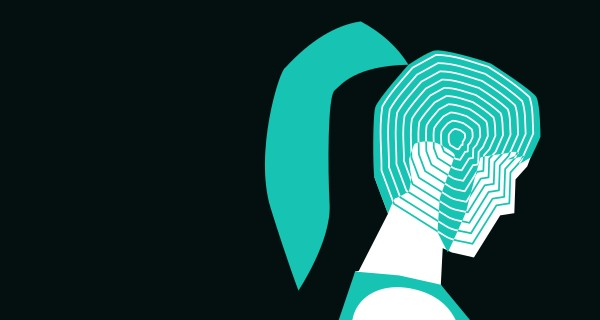
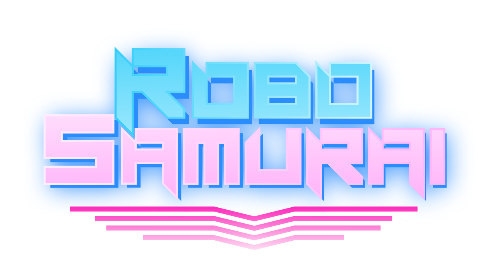
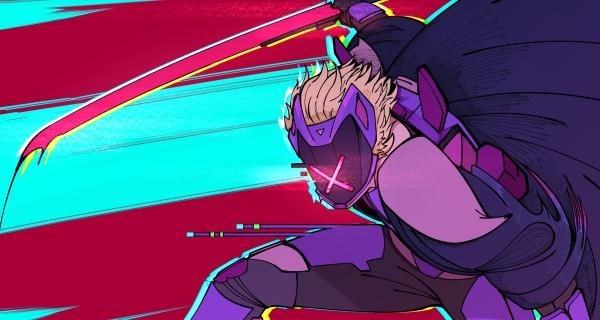

A retro-stylized mind-bending first-person psychological horror game and the second Steam release of the year, co-developed with autoselff.
Made in Godot, 2025.
Made in Godot, 2025.
This is the 3D Generalist portfolio.



